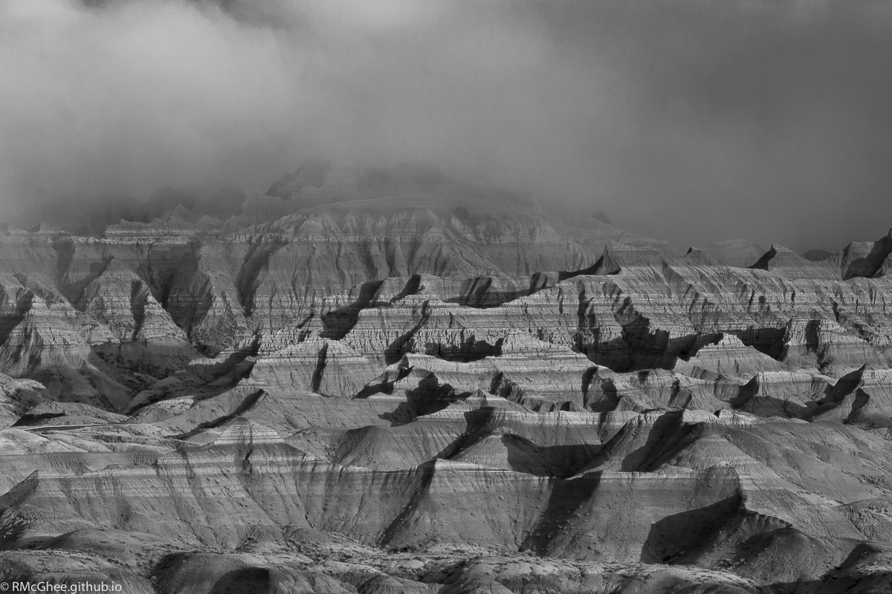
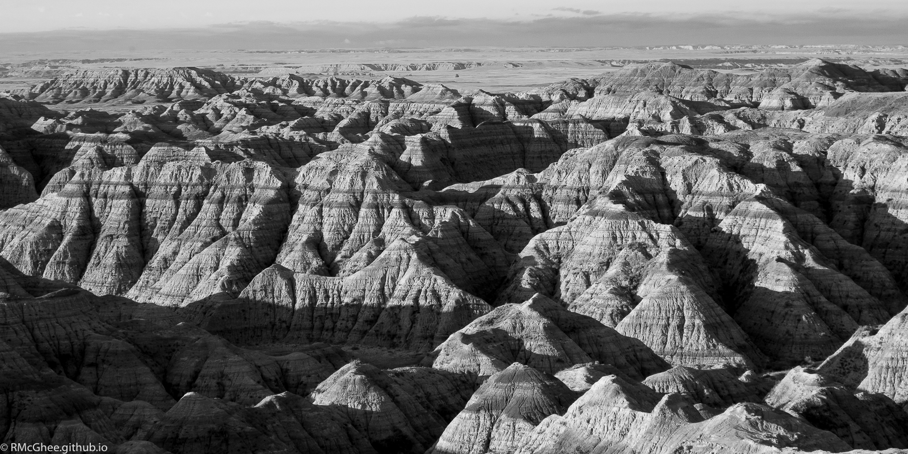
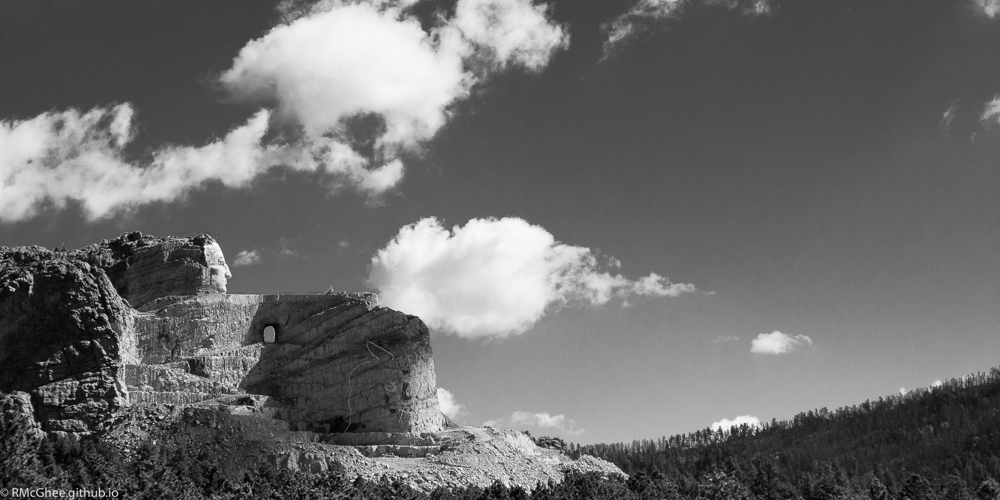
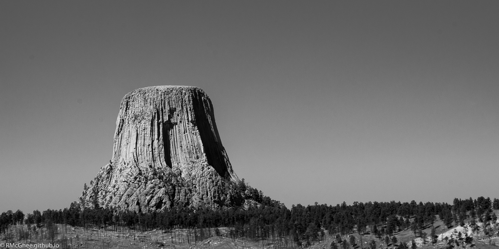

Selected images from one of my hobbies.
Outer Disk at Big Tree
Big Tree, a local landmark. This is the view during the winter, when the outer disk of the milky way is prominent.
This is a little over 20 images taken on a Pentax K-50 (28mm f2.8 ISO 3200)

Galactic Core Rising Over Big Tree
This is the galactic core of the milky way galaxy, visible late spring through August in the northern hemisphere.
This is about 30 images taken on a Pentax K-50 (28mm f2.8 ISO 3200), processed in Lightroom, Microsoft ICE, and Photoshop.

The following images were taken during a back country camping trip in the badlands, as well as a visit to landmarks nearby.


Crazy Horse Memorial

Devils Tower, WY
My portfolio, when finished, will be at http://RMcGhee.github.io/
Please excuse my spaghetti while this is being finished.